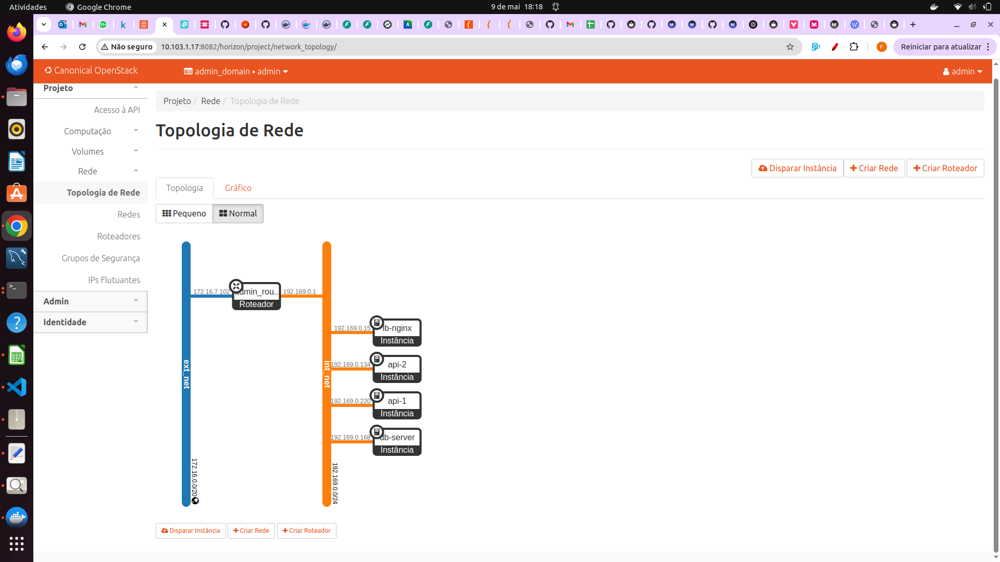
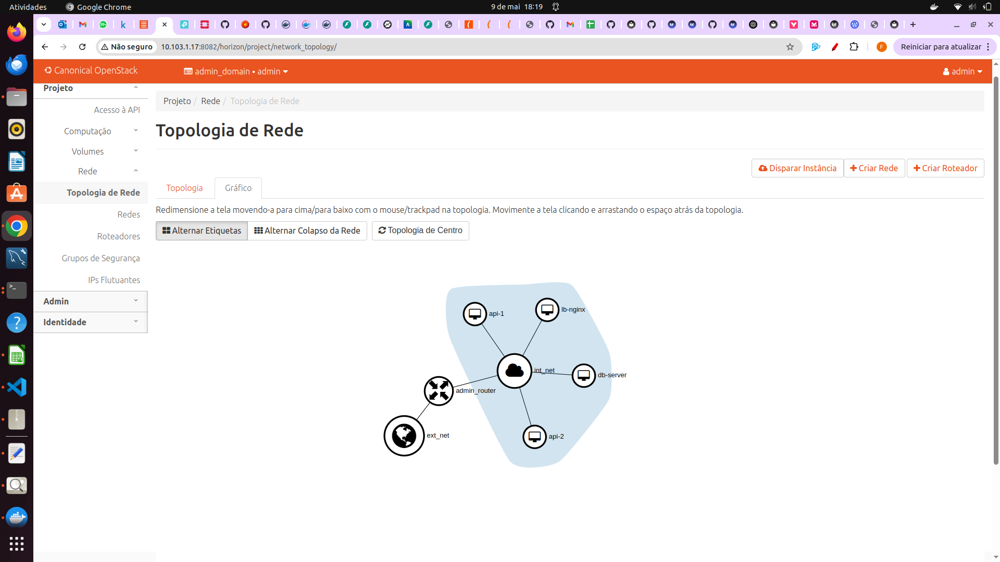

üåê Topologia de Rede
A arquitetura da aplicação foi desenhada em três camadas, isolando responsabilidades e reforçando a segurança:
- Load Balancer (NGINX)
Recebe o tráfego externo através do IP flutuante e distribui as requisições entre as instâncias da API. - API
Duas instâncias idênticas (api-1eapi-2) executando a aplicação FastAPI. - Banco de Dados
Instância única com PostgreSQL, separada logicamente para evitar acesso direto da internet.
üí° Importante:
Após a instalação, removemos o IP flutuante das instânciasapi-1,api-2edb-serverpor motivos de segurança.
A comunicação entre API e banco de dados passa apenas pela rede interna (CIDR192.169.0.0/24).
Topologia no Dashboard do OpenStack
A interface Horizon do OpenStack oferece duas perspectivas complementares da nossa rede:
-
Modo Topologia: mostra conexões em camadas entre redes, roteador e instâncias. 
-
Modo Gráfico: exibe a mesma estrutura em um diagrama em cluster, facilitando a visualização do roteador central e dos nós. 
Detalhes
- Rede Externa (linha azul)
– Conecta o roteador à Internet pública; o IP flutuante está vinculado apenas ao NGINX. - Rede Interna (linha laranja, CIDR
192.169.0.0/24)
– Isola a comunicação entre as instânciasapi-1,api-2edatabase. - Roteador
– Faz NAT de entrada (PREROUTING) do IP flutuante para o NGINX e NAT de saída (POSTROUTING) para a Internet. - Instâncias
– Após a implantação, IP flutuante removido deapi-1,api-2edatabasepor segurança; elas acessam a Internet via NAT do roteador apenas quando necessário.
üí° Vantagens desta visão
- Confirmação imediata de sub-redes, roteadores e interfaces ativas
- Diagnóstico visual de gargalos na topologia
- Simplificação do troubleshooting sem necessidade de comandos CLI
Fluxo de uma Requisição
- O usuário faz uma chamada HTTP para o IP flutuante provisionado no NGINX.
- O NGINX (load balancer) recebe a requisição e, de acordo com sua política de balanceamento, encaminha para api-1 ou api-2.
- A instância de API tratadora conecta-se ao banco de dados via rede interna para executar consultas ou gravações.
- A resposta percorre o caminho inverso até o usuário.
%%{init: {
"theme": "base",
"themeVariables": {
"primaryColor": "#ADD8E6",
"primaryTextColor": "#000000",
"secondaryColor": "#CCCCCC",
"secondaryTextColor": "#0D47A1",
"tertiaryColor": "#CCCCCC",
"tertiaryTextColor": "#000000",
"lineColor": "#000000",
"edgeLabelBack": "#000000"
}
}}%%
flowchart LR
%% Definição dos nós
User[User]
subgraph "192.169.0.0/24"
direction TB
LB[nginx-lb]
API1[API-1]
API2[API-2]
DB[(Database)]
%% Conexões internas (linhas tracejadas)
LB e1@==> API1
LB e2@==> API2
API1 e3@==> DB
API2 e4@==> DB
end
%% Conexão do usuário
User e5@==>|request<br>172.16.0.0/20| LB
e1@{ animate: true }
e2@{ animate: true }
e3@{ animate: true }
e4@{ animate: true }
e5@{ animate: true }
%% Diminui a grossura das setas
linkStyle default stroke-width:1pxDetalhes de Rede
- Rede externa:
- CIDR de saída NAT:
172.16.0.0/20 - IP flutuante associado apenas ao NGINX
- Rede interna:
- CIDR:
192.169.0.0/24 - Comunicação entre
api-1,api-2edb-serversem exposição pública
Regra de NAT para Acesso Externo
Para permitir o acesso ao seu ambiente via roteador físico sem criar túneis, configuramos uma regra de NAT no roteador: